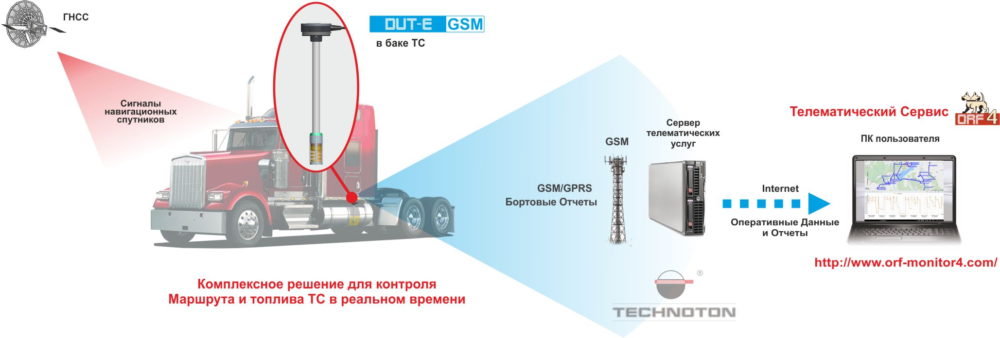
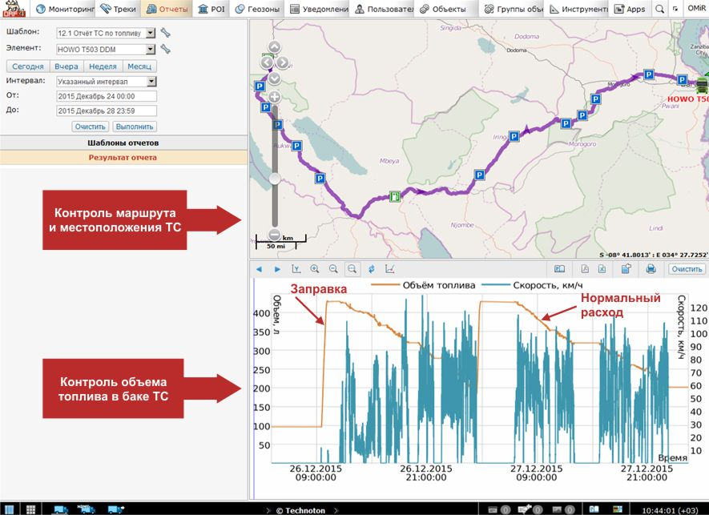

DUT-E GSM
 Это датчик уровня топлива, который устанавливается в
баки мобильных машин и служит для получения сигналов от навигационных спутников,
измерения уровня топлива, формирования и отправки бортовых отчетов на сервер телематических услуг.
Датчик уровня топлива DUT-E GSM используется для эффективного управления автопарком и мониторинга
всех видов транспорта.
Это датчик уровня топлива, который устанавливается в
баки мобильных машин и служит для получения сигналов от навигационных спутников,
измерения уровня топлива, формирования и отправки бортовых отчетов на сервер телематических услуг.
Датчик уровня топлива DUT-E GSM используется для эффективного управления автопарком и мониторинга
всех видов транспорта.
При использовании датчика DUT-E GSM пользователь в режиме реального времени может рассчитать расход топлива с помощью получаемых данных о:
- местоположении ТС
- направления движения ТС
- скорости ТС
- уровне топлива в баке
- объеме топлива в баке
- температуре топлива
- напряжении бортовой сети
Отличительные особенности DUT-E GSM
- Передача данных датчиком на сервер в реальном времени и контроль уровня топлива онлайн, без использования дополнительных устройств
- Внутренняя обработка данных (фильтрация и нормирование параметров, выявление событий, ведение счетчиков) упрощает работу Сервера и экономит трафик
- Уникальная функция самодиагностики позволяет контролировать качество работы датчика
- Возможность удаленного контроля и настройки с помощью SMS-команд
- Быстрый монтаж датчика уровня топлива
- Удобная настройка и тарировка
- Стандартные для ДУТ калибровка и поверка
- Эффективный инструмент мониторинга транспорта
Технические характеристики датчика уровня топлива DUT-E GSM
| Описание | Значение |
| Принцип действия | Емкостной |
| Допускаемая погрешность измерения (приведенная к длине измерительной части датчика) | ±1% |
| Диапазон напряжения питания, В | 10 ... 45 |
| Ток потребления при напряжении питания 12 В/24 В, мА, не более, В | 100/50 |
| Время готовности к приему сигналов ГНСС после включения питания, с, не более | 10 |
| Объем буферной памяти, Отчетов, не менее | 50 000 |
| Коммуникационный Протокол | Wialon IPS 2.0, IPM S6 |
| Температурный диапазон, °С | от -40 до +85 |
| Степень защиты корпуса | IP55/57 |
| Исполнения по длине, мм | 350; 700; 1200; 1700 |
Применение DUT-E GSM в составе Телематической Системы
Датчик уровня топлива DUT-E GSM в составе Телематической Системы самостоятельно рассчитывает текущий объем топлива в баке, определяет местоположение, скорость и направление движения ТС. Значения параметров датчика уровня топлива регистрируются и хранятся во внутренней энергонезависимой памяти датчика.
Спутниковый мониторинг транспортных средств осуществляется с помощью встроенного GSM модуля. С заданной периодичностью, либо при наступлении определенного события, DUT-E GSM формирует Бортовые Отчеты и передает их по GPRS-каналу на Сервер телематических услуг. Установленное на сервере программное обеспечение производит обработку и анализ полученных данных и формирует аналитические отчеты за выбранный период времени. Пользователи, при наличии доступа к сети Интернет, через браузер могут получать и просматривать аналитические отчеты и контролировать уровень топлива онлайн.
Аналитические Отчеты содержат детализированную информацию, необходимую для эффективного контроля работы водителей и машин: продолжительность работы, время и место стоянок, расход топлива, заправки и сливы топлива, маршрут движения, скорость и др. Контроль уровня топлива позволяет не только проводить мониторинг транспорта онлайн, но и значительно повысить эффективность управления автопарком.
Наиболее высокую точность отображения данных при контроле маршрута движения и расхода топлива ТС обеспечивает Телематический Сервис ORF 4. Телематический Сервис ORF 4 - основной инструмент руководителя при осуществлении мониторинга транспорта на предприятии.
Пример аналитического отчета ORF 4, полученного на основании данных DUT-E GSM
Применение DUT-E GSM позволяет решить широкий спектр задач по экономии топлива на предприятии, включая несанкционированный слив дизельного топлива или кражу ГСМ. Внедрение программ по эффективному управлению автопарком охватывает практически все типы транспортных средств: от тепловозов и магистральных тягачей до специальной техники и бензовозов.
Функциональные возможности ситсем транспортной телематики, в которых используются ДУТ могут быть расширены за счет дополнительной установки датчиков расхода топлива. Предотвращение сливов ГСМ, мониторинг транспорта и оптимизация рабочих процессов гарантированно приводят к существенному снижению затрат на топливо.